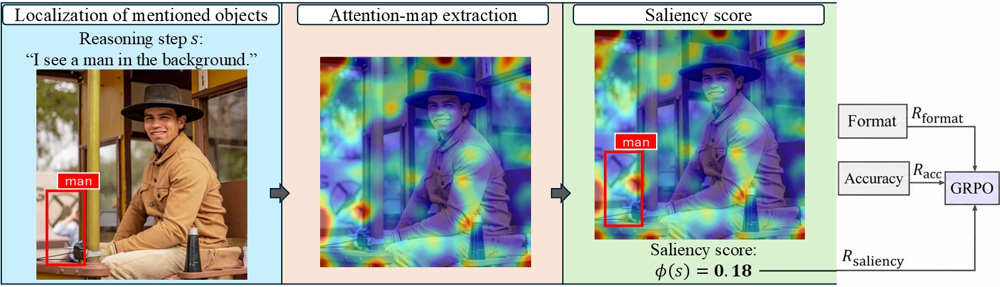
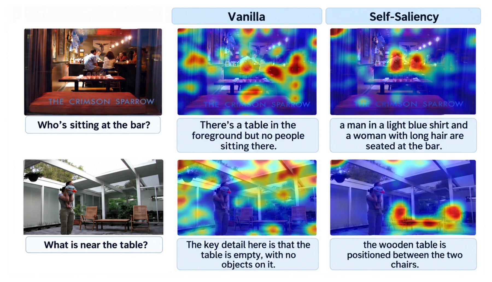
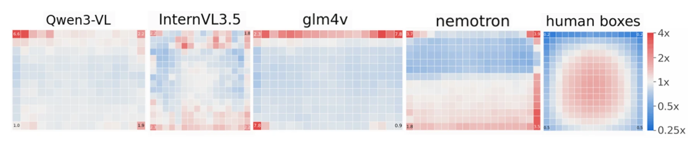
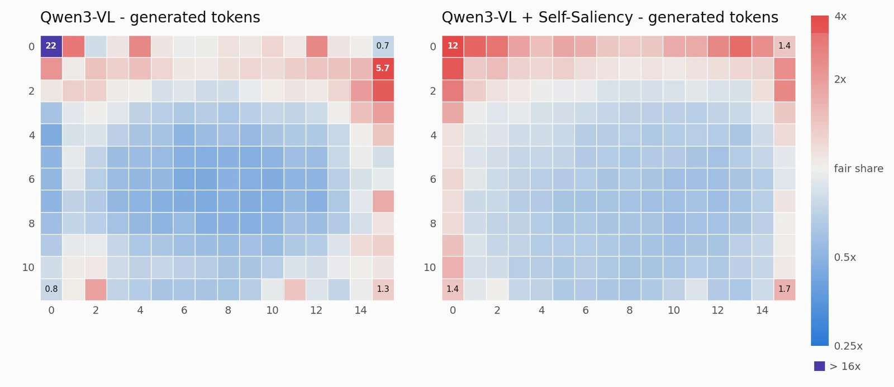

Look Where You Say You’re Looking
Self-Grounded Attention for Visual Reasoning
1NVIDIA Research 2University of Melbourne 3The Hebrew University of Jerusalem 4Bar-Ilan University
TL;DR
We introduce Self-Saliency, a method for aligning where a model looks with what it talks about. Self-Saliency uses a grounding model to localize the objects mentioned in each reasoning step, and treats the resulting regions as supervision for the model's visual attention. On a broad suite of 25 visual reasoning benchmarks, it outperforms recent baselines.
Method

Results
| No attention intervention | Prior work | Ours | |||||
|---|---|---|---|---|---|---|---|
| Benchmark | Qwen3-VL 8B-Instruct |
Coldstart | No-Sal | VGA | Saliency-R1 | EASE | Self-Saliency |
| AlgoPuzzleVQA | 32.8 | 36.9 | 39.9 | 34.3 | 38.7 | 36.4 | 41.4 |
| ChartQA | 85.0 | 88.8 | 89.4 | 84.9 | 89.7 | 88.9 | 90.0 |
| CV-Bench | 86.0 | 83.4 | 84.9 | 86.1 | 83.8 | 84.2 | 85.9 |
| DailyClue | 35.4 | 32.4 | 34.2 | 34.2 | 32.0 | 32.7 | 31.2 |
| HallusionBench | 63.2 | 59.7 | 57.1 | 62.0 | 58.3 | 62.6 | 55.7 |
| HR-Bench 4K | 78.0 | 76.9 | 77.4 | 78.1 | 78.9 | 76.9 | 79.5 |
| HR-Bench 8K | 74.1 | 72.9 | 72.0 | 74.2 | 76.0 | 72.8 | 74.5 |
| IllusionVQA | 40.0 | 41.9 | 41.5 | 40.1 | 43.8 | 40.5 | 43.5 |
| LogicVista | 52.5 | 54.9 | 55.1 | 51.3 | 56.5 | 52.9 | 56.2 |
| MathVerse | 34.4 | 51.0 | 52.8 | 33.8 | 49.5 | 50.4 | 50.9 |
| MathVision | 29.6 | 33.5 | 37.5 | 31.2 | 33.9 | 35.9 | 41.5 |
| MathVista | 73.5 | 69.5 | 71.8 | 73.8 | 71.0 | 70.0 | 70.4 |
| MME | 2375.9 | 2371.7 | 2376.1 | 2379.8 | 2395.7 | 2395.4 | 2355.1 |
| MME-RealWorld | 63.7 | 64.2 | 66.7 | 63.8 | 66.4 | 65.1 | 68.7 |
| MMK12 | 68.2 | 63.1 | 62.3 | 67.9 | 61.1 | 63.1 | 62.0 |
| MMMU-Pro | 40.4 | 48.6 | 48.6 | 41.9 | 47.7 | 47.1 | 48.4 |
| MMStar | 64.0 | 69.8 | 70.9 | 64.7 | 69.9 | 69.5 | 69.6 |
| OmniSpatial | 47.4 | 50.3 | 48.2 | 46.8 | 50.2 | 50.2 | 51.0 |
| SalBench | 43.3 | 60.7 | 59.8 | 43.3 | 62.7 | 58.6 | 64.7 |
| POPE | 88.8 | 87.4 | 88.2 | 88.8 | 88.5 | 88.5 | 88.9 |
| RealWorldQA | 68.5 | 67.1 | 67.8 | 68.4 | 68.8 | 67.5 | 68.2 |
| ScienceQA-IMG | 94.4 | 96.3 | 97.2 | 94.4 | 97.6 | 96.2 | 97.4 |
| VisuLogic | 26.6 | 24.9 | 24.8 | 26.4 | 24.9 | 24.4 | 24.4 |
| V* | 84.3 | 79.6 | 79.6 | 85.3 | 80.6 | 81.2 | 82.7 |
| WeMath | 69.4 | 68.6 | 74.3 | 68.2 | 73.8 | 71.1 | 75.5 |
| Mean score ↑ | 61.1 | 62.7 | 63.5 | 61.2 | 63.6 | 62.9 | 64.3 |
| Mean rank ↓ | 4.42 | 4.64 | 3.68 | 4.48 | 3.26 | 4.50 | 3.02 |
| Wins ↑ | 4 | 0 | 3 | 3 | 6 | 0 | 9 |

Analysis
Training changes the text at the selected heads, and the attention across all of layer 22
The model can raise the reward two ways: by changing its attention, or by changing its text.
At the heads the reward is measured on (layer 22, heads 28 and 31), the text does most of the work — the trained model writes shorter chains that refer to larger regions.
Across all the heads of layer 22, attention inside the grounded regions increases significantly.
| Text-related | Attention-related | |||
|---|---|---|---|---|
| Completion length | Box union area | In-region share (selected heads) |
In-region share (layer-22 heads) |
|
| Vanilla | 230.0 | 0.533 | 0.462 | 0.612 |
| Self-Saliency | 149.6 | 0.566 | 0.462 | 0.621 |
Attention piles up on the image border
Across four instruction-tuned VLMs, visual attention is enriched along the geometric border of the image and depleted in the center — and in every model the single most enriched patch sits in a corner. Human annotators marking the regions that matter for answering the question do the opposite.
| Model | En border ring | En center | Largest En |
|---|---|---|---|
| Qwen3-VL-8B-Instruct | 1.20 | 0.92 | Top left, 6.64 |
| InternVL3.5-8B | 1.18 | 0.95 | Bottom left, 2.29 |
| GLM-4.1V-Thinking | 1.50 | 0.82 | Top right, 7.79 |
| Nemotron-Omni | 1.43 | 0.87 | Top right, 3.86 |
| Human boxes | 0.53 | 1.14 | Non-border, 1.87 |


Ablations
Two variants change only where the target boxes come from. Center rect uses a fixed rectangle in the middle of the image — if that matched Self-Saliency, the gains would just be “attend away from the corner”. Question boxes grounds the input question instead of the model's own reasoning steps — testing whether chain-level grounding beats image-level text. Neither closes the gap.
| Qwen3-VL-8B Instruct |
Coldstart | No-Sal | Center rect | Question boxes | Self-Saliency | |
|---|---|---|---|---|---|---|
| Mean score ↑ | 61.14 | 62.69 | 63.47 | 63.39 | 63.33 | 64.26 |
| Mean rank ↓ | 3.90 | 4.06 | 3.34 | 3.68 | 3.38 | 2.64 |
| Wins ↑ | 7 | 0 | 3 | 2 | 5 | 9 |
BibTeX
@article{berger2026selfsaliency,
title = {Look Where You Say You're Looking:
Self-Grounded Attention for Visual Reasoning},
author = {Berger, Uri and Chechik, Gal and Dalal, Gal},
journal = {arXiv preprint arXiv:TODO},
year = {2026}
}